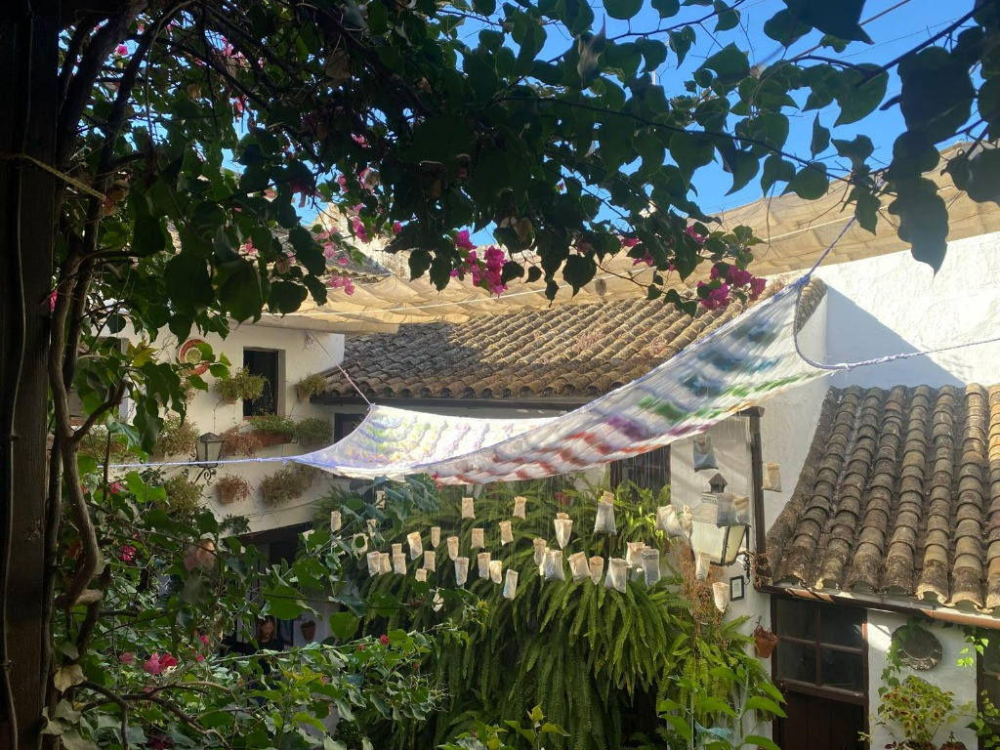
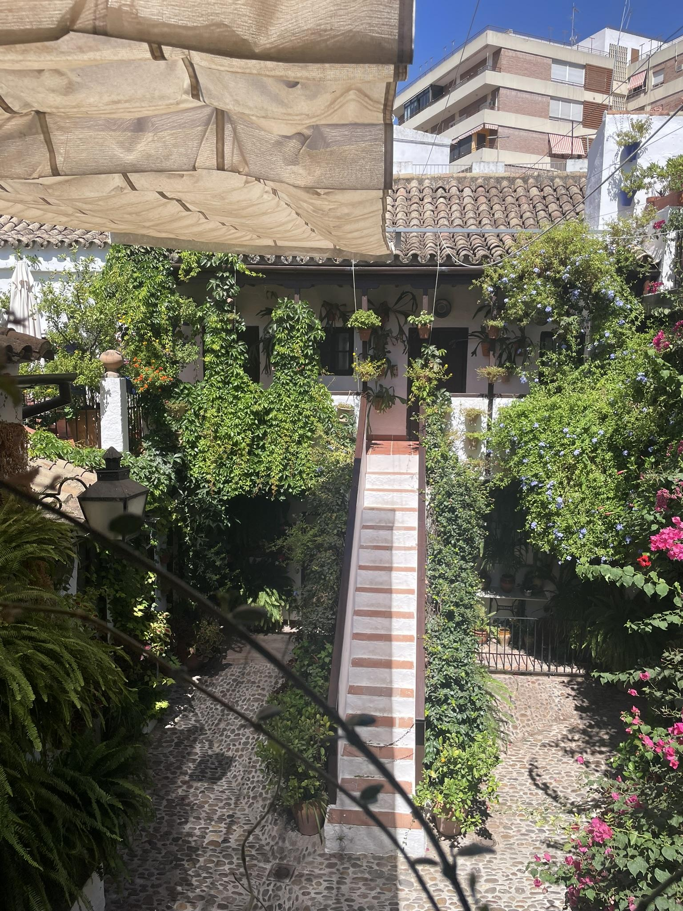
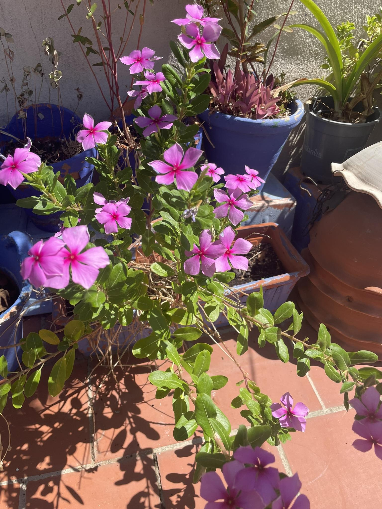
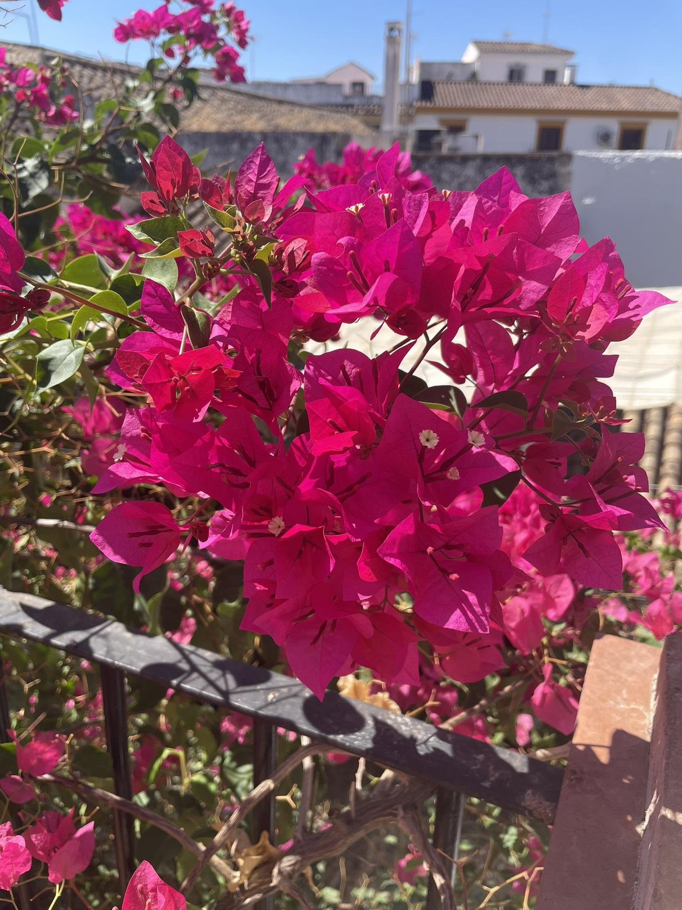
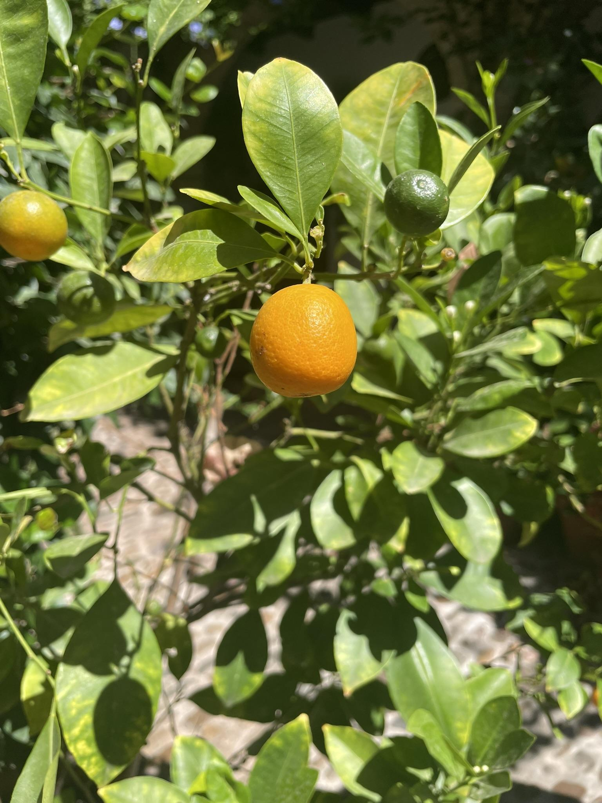
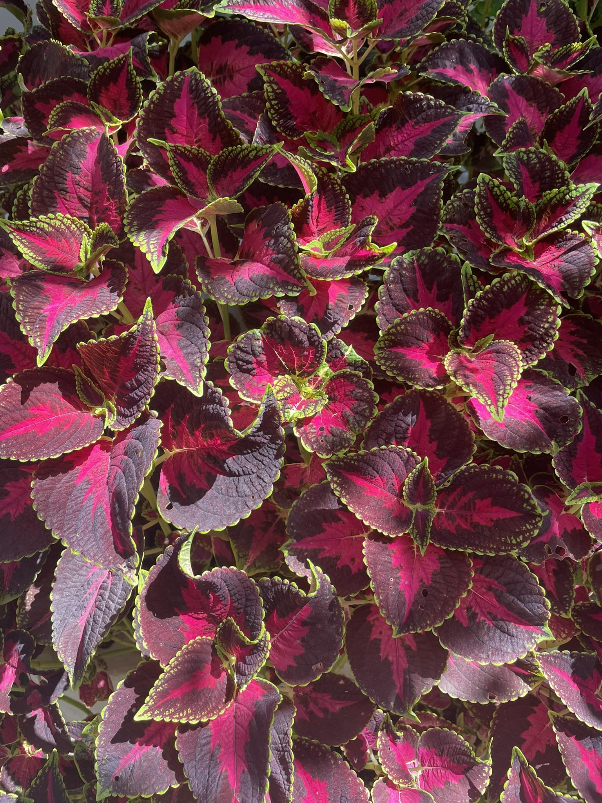
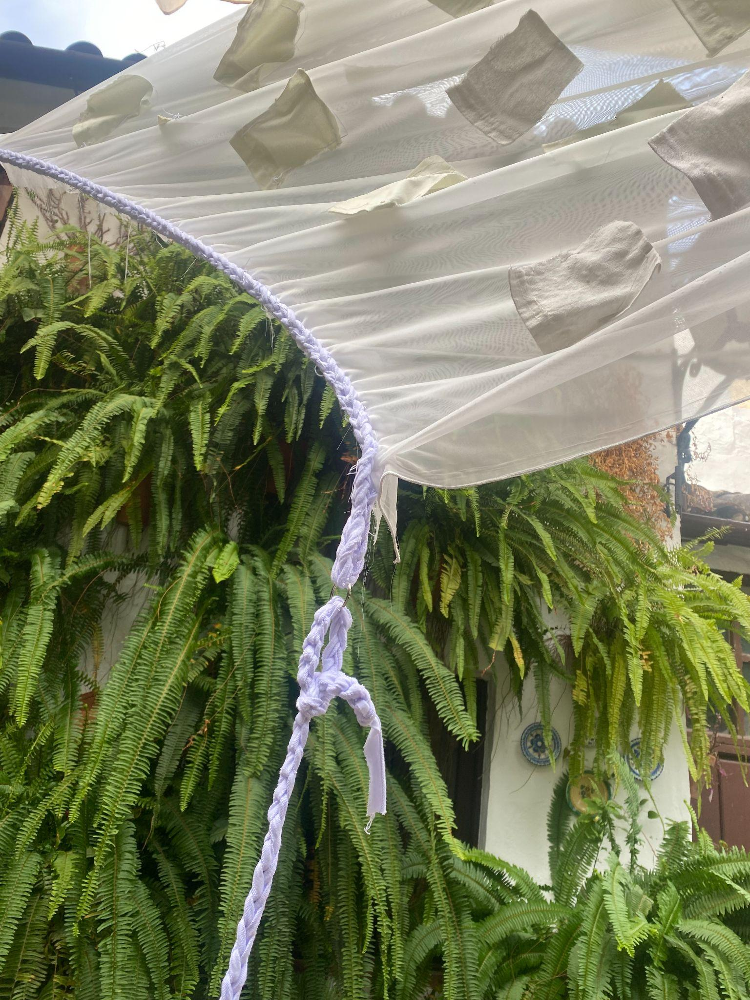
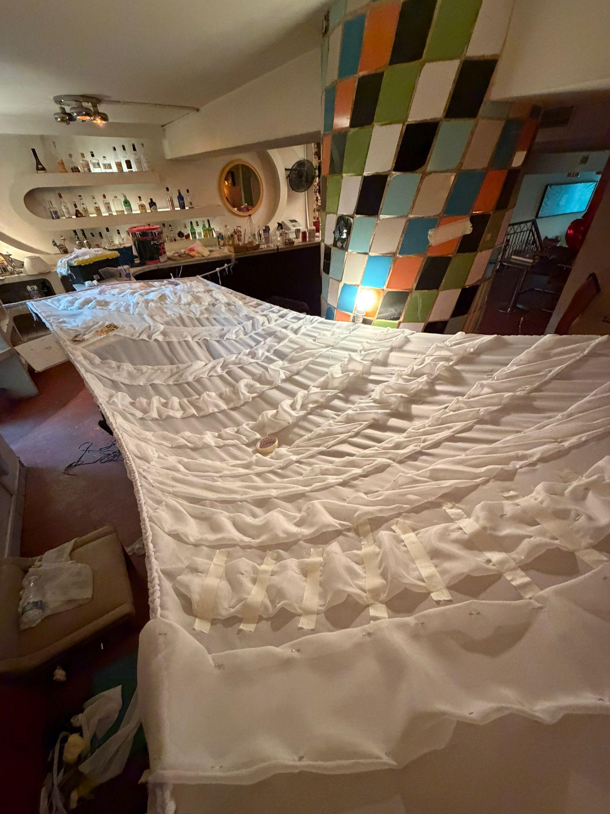
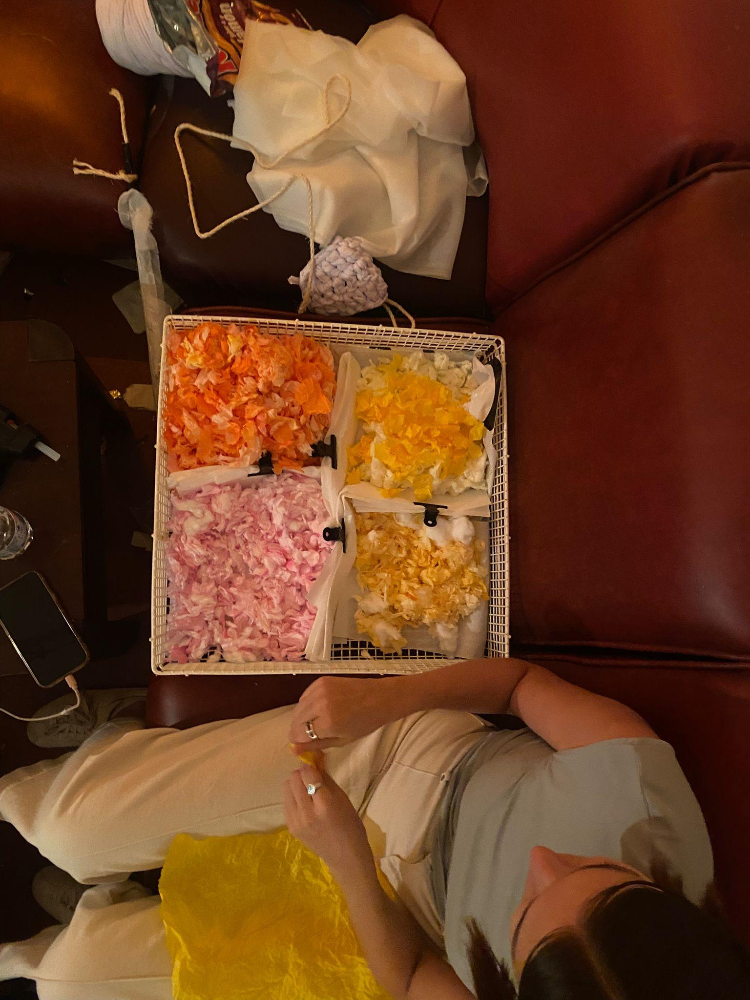
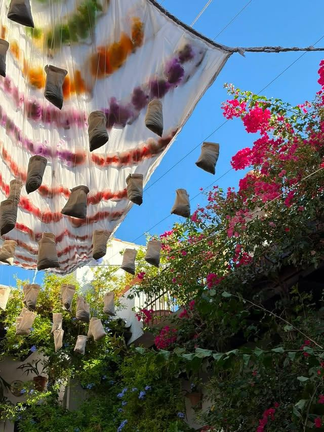

BAJO LA FRESCA
Reinterpreting the UNESCO-recognized Cordoban courtyard tradition of “tomar el fresco” (gathering outdoors to inhale the evening cool). An undulating, scent-diffusing textile canopy carrying gradient-dyed citrus cotton petals that passively cools and repels insects.
Architectural Research & Material Prototyping: Microclimatic site analysis of Patio San Basilio 44; designing and crafting the pleated sinusoidal wave tectonics using thermal joinery; developing gradient botanical dye pigments and scent infusion with citrus peels and citronella; on-site tensile rigging and installation calibration.
“How do you highlight beauty without stealing its spotlight?”
Can a temporary canopy celebrate historic courtyard heritage without obscuring it? Scent-diffusing citrus textiles and lightweight tensile rigging frame the existing architecture while generating microclimatic shade.

The Suspended Canopy Floating Over the Living Courtyard Airspace
Full perspective inside Patio San Basilio 44. Spanning between upper gallery balustrades, the pleated textile canopy provides passive shading and botanical scent diffusion without occupying a single square centimeter of the densely potted courtyard floor.
In Córdoba, where summer temperatures routinely surpass 40°C–45°C, courtyards have served since Roman and Islamic times as communal technologies of climatic survival and social cohesion. Inscribed on the UNESCO Representative List of Intangible Cultural Heritage, the ritual of “tomar el fresco” (literally “taking the fresh air”) represents an enduring Andalusian practice: at dusk, as masonry slowly dissipates the day’s heat, families and neighbors carry chairs outdoors into shared courtyards to socialize, rest, and bathe in the restorative evening breeze. Thick whitewashed stone walls, cascading vegetation, and wet cobblestones create a microclimatic sanctuary up to 10°C cooler than the open streets.
Located in Córdoba’s historic Alcázar Viejo neighborhood, Patio San Basilio 44 is one of the festival’s most emblematic living courtyards. Framed by traditional cobblestone paving (empedrado cordobés), an open staircase connecting to upper galleries, and hundreds of hand-painted cobalt-blue ceramic pots lining the lime-washed walls, it functions as an open-air domestic living room where generations have gathered.

Central Courtyard Core & Traditional Empedrado
The central domestic axis of Patio San Basilio 44. Terracotta-tiled stairways, bougainvillea vines, and river cobblestones frame the communal courtyard where residents gather for tomar el fresco.

The Cobalt Blue Ceramic Arrays
Hundreds of iconic blue pots mounted against lime-washed plaster walls, maximizing plant surface area and evaporative cooling within a strictly finite ground footprint.

Upper Gallery Awnings & Roof Tile Microclimate
Clay roof tiles and fabric awnings stretched over ancient eaves, generating convective air currents and establishing the overhead threshold where the Bajo La Fresca canopy is suspended.
The central spatial paradox of Patio San Basilio 44: while the desire for vegetative cooling is immense, physical floor and wall space is strictly finite and saturated with potted plants, domestic seating, and circulation paths. Our intervention, Bajo La Fresca, resolves this constraint by activating the unprogrammed vertical airspace above the courtyard. Rather than competing with existing plants on the ground, it suspends an undulating, lightweight textile landscape that extends the garden upward.

Living Chromatic Gradient Matrix
Directly sampling the living ecology of the patio—translating bougainvillea magenta, citrus peel yellow, olive leaf green, and pot blue into concentric hue bands.

Airspace as an Aerial Garden Frontier
Cantilevering lightweight tensile canopies across the courtyard volume, generating a secondary microclimatic filter that tempers sunlight while releasing essential citrus scents.
The journey from conceptual drawing to physical installation was driven by hands-on physical prototyping, testing fabric behavior, structural tension, and pocket formation under real atmospheric forces:
ITERATION 01 — Hand-Sewn Pockets & Structural Limits
Initial tests involved hand-sewing individual flat pockets directly into sheer white textile. While visually promising on the table, outdoor hanging tests against the patio fern foliage revealed critical flaws: the pockets lacked volumetric depth, sagged under their own weight, and flapped erratically in courtyard drafts.

Hand-Sewing Pocket Channels in Sheer Textile
Early manual stitching tests evaluating pocket spacing, seam tension, and textile translucency on the studio worktable.

Hanging Test Against Courtyard Foliage
Outdoor suspension test against the patio fern wall, revealing gravitational sag and informing the pivot to rigid pleated geometries.
ITERATION 02 — Sinusoidal Wave Geometry & Pleated Rigidity
To achieve structural resilience and rhythmic dynamic shadows, we transitioned to a folded pleating logic: stamping and bonding continuous strips of fabric into undulating sinusoidal waves using precision hot adhesive joinery. This gave the canopy architectural rigidity while creating open channels for natural breezes to flow through freely.

Precision Hot-Bonded Sinusoidal Pleats
Bonding stamped fabric strips with precision thermal joints, transforming flat textile into three-dimensional, self-supporting undulating waves.

Full-Scale Canopy Assembly on Studio Table
Assembling modular wave strips into continuous spans on the studio workbench, calibrating pocket intervals and suspension points.
Architecture often prioritizes the visual, but the experience of tomar el fresco is fundamentally olfactory—the scent of night-blooming jasmine, damp terracotta, citrus trees, and bougainvillea. We developed an artisanal infusing technique to embed scent directly into the canopy:

Textile Pigments Matching Patio Flora
Specialized fabric pigments mixed in vibrant tones of bougainvillea magenta, Seville orange, citron yellow, and olive foliage green.

Gradient-Dyed Raw Cotton Bundles
Raw cotton bundles dyed in pastel and vibrant gradients, ready for manual fraying into absorbent, high-surface-area tactile fibers.

Citrus Peels & Citronella Infusion
Frayed cotton petals infused with real fresh orange and lemon peels alongside natural citronella oil, dispersing refreshing citrus notes and repelling evening insects.
The finalized installation in Patio San Basilio 44: suspended between whitewashed balcony balustrades, framing the southern sky, and floating over cobblestones as visitors gather below:

Tensile Anchoring & Courtyard Calibration
The installation team tensioning and leveling structural lines across the upper balustrades, ensuring the canopy hovers securely above the living greenery.

Suspended Canopy with Hanging Scent Pouches
The undulating textile canopy floating above the courtyard volume, carrying scented pouches that sway in convective evening breezes.

Looking Upward Through Canopy and Bougainvillea
View looking up through the suspended textile ripples toward the clear Andalusian sky, framed by living bougainvillea branches and filtering harsh solar glare into gentle dappled shade.
Bajo la Fresca is a contextual research and spatial installation realized in Patio San Basilio 44 during the traditional courtyard festivities of Córdoba, Spain. The work explores the socio-climatic tradition of tomar el fresco—an Andalusian custom where neighbors migrate into shaded courtyards and open thresholds at sunset to relax, converse, and bathe in the restorative evening breeze.
In a city where summer temperatures regularly cross 40°C, the courtyard acts as an ecological sanctuary of coexistence: thick whitewashed masonry, evaporative foliage, and shared water wells form a microclimatic oasis. Yet, in these tightly conserved historic spaces, floor and wall surfaces are already saturated with centuries of domestic life. Bajo la Fresca addresses this paradox by activating the courtyard's overhead airspace through a suspended, pleated textile canopy that expands the garden upward without occupying scarce ground.
Crafted from undulating fabric waves bonded with parametric pleats and laden with gradient-dyed cotton petals, the canopy is infused with fresh orange, lemon peels, and natural citronella essences. As hot daytime air gives way to evening breezes, the suspended pouches gently sway, diffusing refreshing citrus notes and natural insect-repelling aromas into the gathered community below. It poses an essential ecological and architectural question: How do you highlight beauty without stealing its spotlight?